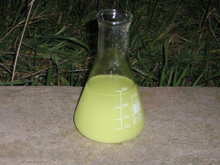
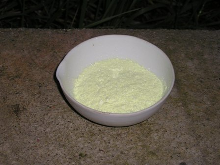

Le condensazioni sono reazioni in cui due o più molecole si combinano insieme portando generalmente alla perdita di una molecola di acqua. La reazione di un’aldeide con un chetone in presenza di una base è un esempio di condensazione aldolica, ed in particolare è una doppia condensazione aldolica incrociata, quando il chetone possiede atomi di idrogeno in α su entrambi i lati e può "sommare" il gruppo benzenico, diciamo così, a destra e a sinistra.
Ma torniamo alla parte sperimentale-operativa, alla quale strettamente mi attengo secondo i miei personali interessi, lasciando le disquisizioni teoriche ad altri luoghi più appropriati. Ho provato un classico esempio di doppia condensazione aldolica incrociata replicando la sintesi del dibenzalacetone; in questo metaforico spettacolo chimico gli attori sono per l'aldeide ---> l'aldeide benzoica e per il chetone ---> l'acetone.
Vi sono naturalmente anche altri attori non protagonisti che fanno la loro parte, come vedremo.
Ecco la locandina ed il copione di questa simpatica commediola:
- Protagonista femminile: Aldeide Benzoica
- Protagonista maschile: Dimetilchetone (detto Acetone)
- Solvente coadiuvante: Etanolo
- Base indispensabile: Sodio Idrossido
- Sceneggiatura: vetreria opportuna

In una beuta da 250 ml, preparare una soluzione di 10 g di NaOH in 100 ml di acqua e 80 ml di etanolo. La soluzione è tenuta a 20-25° e predisposta su agitatore.
Lentamente, in circa mezz'ora e tenendo il liquido energicamente mescolato, aggiungere a piccole porzioni una miscela di 10,5 ml di benzaldeide e 3,6 ml di acetone.
Dopo poche aggiunte il liquido diventa leggermente giallino ma è sempre limpido; ancora dopo poco improvvisamente la soluzione si intorbida in giallo chiaro e comincia a formarsi un precipitato flocculento.

Alla fine dell'aggiunta dei reagenti continuare l'agitazione per mezz'ora, tenendo presente che a causa del precipitato il liquido tende ad addensarsi e quindi occorre un'agitatore efficiente.
Alla fine della reazione filtrare in vuoto su buchner e lavare con abbondante acqua per rimuovere tutto il sodio (il prodotto è completamente insolubile, non se ne perde in questa fase); far seguire un leggero lavaggio con etanolo freddo e lasciar seccare all'aria.
La filtrazione con questa sostanza è molto facile e non intasa minimamente il filtro; anche l'asciugatura è facile e veloce.
La resa nel mio caso è stata di 7 g (circa 65%); p.f. 104-107°.
Microcristallini giallo canarino chiaro, quasi inodori.

Il dibenzalacetone può essere purificato per ricristallizzazione da etilacetato (10 ml solvente/4 g con resa dell'80%). Il prodotto puro ha p.f. 110–111°.
Le foto (con i colori non proprio fedeli perchè prese in fretta e quasi "in notturna") mostrano la fase iniziale della condensazione in beuta e la capsulina con il prodotto finito.
Quest'ultimo è un attore un po' vanitoso e ha (lui non lo dice ma ci tiene!) un nome altisonante:
1,5-difenil-1,4-pentadien-3-one, anche se tutti lo chiamano più semplicemente dibenzalacetone.
Una curiosità: il dibenzalacetone trova impiego farmaceutico per la preparazione delle creme solari, come antiinfiammatorio e protettivo contro i raggi ultravioletti.
Ma guarda un po'...!
1 commenti